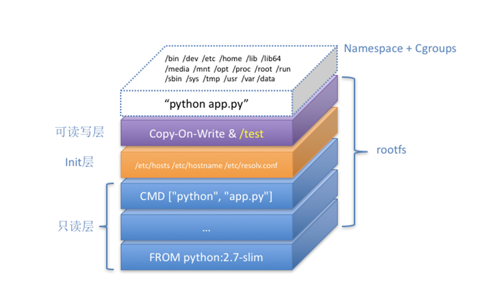

在前面的三次分享中，我分别从 Linux Namespace 的隔离能力、Linux Cgroups 的限制能力，以及基于 rootfs 的文件系统三个角度，为你剖析了一个 Linux 容器的核心实现原理。
备注：之所以要强调 Linux 容器，是因为比如 Docker on Mac，以及 Windows Docker（Hyper-V 实现），实际上是基于虚拟化技术实现的，跟我们这个专栏着重介绍的 Linux 容器完全不同。
而在今天的分享中，我会通过一个实际案例，对 “白话容器基础” 系列的所有内容做一次深入的总结和扩展。希望通过这次的讲解，能够让你更透彻地理解 Docker 容器的本质。
在开始实践之前，你需要准备一台 Linux 机器，并安装 Docker。这个流程我就不再赘述了。
这一次，我要用 Docker 部署一个用 Python 编写的 Web 应用。这个应用的代码部分（app.py）非常简单：
from flask import Flask
import socket
import os
app = Flask(__name__)
@app.route('/')
def hello():
html = "<h3>Hello {name}!</h3>" \
"<b>Hostname:</b> {hostname}<br/>"
return html.format(name=os.getenv("NAME", "world"), hostname=socket.gethostname())
if __name__ == "__main__":
app.run(host='0.0.0.0', port=80)
在这段代码中，我使用 Flask 框架启动了一个 Web 服务器，而它唯一的功能是：如果当前环境中有 “NAME” 这个环境变量，就把它打印在 “Hello” 后，否则就打印 “Hello world”，最后再打印出当前环境的 hostname。
这个应用的依赖，则被定义在了同目录下的 requirements.txt 文件里，内容如下所示：
$ cat requirements.txt
Flask
而将这样一个应用容器化的第一步，是制作容器镜像。
不过，相较于我之前介绍的制作 rootfs 的过程，Docker 为你提供了一种更便捷的方式，叫作 Dockerfile，如下所示。
# 使用官方提供的 Python 开发镜像作为基础镜像
FROM python:2.7-slim
# 将工作目录切换为 /app
WORKDIR /app
# 将当前目录下的所有内容复制到 /app 下
ADD . /app
# 使用 pip 命令安装这个应用所需要的依赖
RUN pip install --trusted-host pypi.python.org -r requirements.txt
# 允许外界访问容器的 80 端口
EXPOSE 80
# 设置环境变量
ENV NAME World
# 设置容器进程为：python app.py，即：这个 Python 应用的启动命令
CMD ["python", "app.py"]
通过这个文件的内容，你可以看到 ** Dockerfile 的设计思想，是使用一些标准的原语（即大写高亮的词语），描述我们所要构建的 Docker 镜像。并且这些原语，都是按顺序处理的。 **
比如 FROM 原语，指定了 “python:2.7-slim” 这个官方维护的基础镜像，从而免去了安装 Python 等语言环境的操作。否则，这一段我们就得这么写了：
FROM ubuntu:latest
RUN apt-get update -yRUN apt-get install -y python-pip python-dev build-essential
...
其中，RUN 原语就是在容器里执行 shell 命令的意思。
而 WORKDIR，意思是在这一句之后，Dockerfile 后面的操作都以这一句指定的 /app 目录作为当前目录。
所以，到了最后的 CMD，意思是 Dockerfile 指定 python app.py 为这个容器的进程。这里，app.py 的实际路径是 /app/app.py。所以，CMD [“python”, “app.py”] 等价于 "docker runpython app.py"。
另外，在使用 Dockerfile 时，你可能还会看到一个叫作 ENTRYPOINT 的原语。实际上，它和 CMD 都是 Docker 容器进程启动所必需的参数，完整执行格式是：“ENTRYPOINT CMD”。
但是，默认情况下，Docker 会为你提供一个隐含的 ENTRYPOINT，即：/bin/sh -c。所以，在不指定 ENTRYPOINT 时，比如在我们这个例子里，实际上运行在容器里的完整进程是：/bin/sh -c “python app.py”，即 CMD 的内容就是 ENTRYPOINT 的参数。
备注：基于以上原因， 我们后面会统一称 Docker 容器的启动进程为 ENTRYPOINT，而不是 CMD。
需要注意的是，Dockerfile 里的原语并不都是指对容器内部的操作。就比如 ADD，它指的是把当前目录（即 Dockerfile 所在的目录）里的文件，复制到指定容器内的目录当中。
读懂这个 Dockerfile 之后，我再把上述内容，保存到当前目录里一个名叫 “Dockerfile” 的文件中：
$ ls
Dockerfile app.py requirements.txt
接下来，我就可以让 Docker 制作这个镜像了，在当前目录执行：
$ docker build -t helloworld .
其中，-t 的作用是给这个镜像加一个 Tag，即：起一个好听的名字。docker build 会自动加载当前目录下的 Dockerfile 文件，然后按照顺序，执行文件中的原语。而这个过程，实际上可以等同于 Docker 使用基础镜像启动了一个容器，然后在容器中依次执行 Dockerfile 中的原语。
需要注意的是，Dockerfile 中的每个原语执行后，都会生成一个对应的镜像层。 即使原语本身并没有明显地修改文件的操作（比如，ENV 原语），它对应的层也会存在。只不过在外界看来，这个层是空的。
docker build 操作完成后，我可以通过 docker images 命令查看结果：
$ docker image ls
REPOSITORY TAG IMAGE ID
helloworld latest 653287cdf998
通过这个镜像 ID，你就可以使用在《白话容器基础（三）：深入理解容器镜像》中讲过的方法，查看这些新增的层在 AuFS 路径下对应的文件和目录了。
接下来，我使用这个镜像，通过 docker run 命令启动容器：
$ docker run -p 4000:80 helloworld
在这一句命令中，镜像名 helloworld 后面，我什么都不用写，因为在 Dockerfile 中已经指定了 CMD。否则，我就得把进程的启动命令加在后面：
$ docker run -p 4000:80 helloworld python app.py
容器启动之后，我可以使用 docker ps 命令看到：
$ docker ps
CONTAINER ID IMAGE COMMAND CREATED
4ddf4638572d helloworld "python app.py" 10 seconds ago
同时，我已经通过 -p 4000:80 告诉了 Docker， 请把容器内的 80 端口映射在宿主机的 4000 端口上。
这样做的目的是，只要访问宿主机的 4000 端口，我就可以看到容器里应用返回的结果：
$ curl http://localhost:4000
<h3>Hello World!</h3><b>Hostname:</b> 4ddf4638572d<br/>
否则，我就得先用 docker inspect 命令查看容器的 IP 地址，然后访问 “http://< 容器 IP 地址>:80” 才可以看到容器内应用的返回。
至此，我已经使用容器完成了一个应用的开发与测试，如果现在想要把这个容器的镜像上传到 DockerHub 上分享给更多的人，我要怎么做呢？
为了能够上传镜像，我首先需要注册一个 Docker Hub 账号，然后使用 docker login 命令登录。
接下来，我要用 docker tag 命令给容器镜像起一个完整的名字：
$ docker tag helloworld geektime/helloworld:v1
注意：你自己做实验时，请将 "geektime" 替换成你自己的 Docker Hub 账户名称，比如 zhangsan/helloworld:v1
其中，geektime 是我在 Docker Hub 上的用户名，它的 “学名” 叫镜像仓库（Repository）；“/” 后面的 helloworld 是这个镜像的名字，而 “v1” 则是我给这个镜像分配的版本号。
然后，我执行 docker push：
$ docker push geektime/helloworld:v1
这样，我就可以把这个镜像上传到 Docker Hub 上了。
此外，我还可以使用 docker commit 指令，把一个正在运行的容器，直接提交为一个镜像。一般来说，需要这么操作原因是：这个容器运行起来后，我又在里面做了一些操作，并且要把操作结果保存到镜像里，比如：
$ docker exec -it 4ddf4638572d /bin/sh
# 在容器内部新建了一个文件
root@4ddf4638572d:/app# touch test.txt
root@4ddf4638572d:/app# exit
# 将这个新建的文件提交到镜像中保存
$ docker commit 4ddf4638572d geektime/helloworld:v2
这里，我使用了 docker exec 命令进入到了容器当中。在了解了 Linux Namespace 的隔离机制后，你应该会很自然地想到一个问题：docker exec 是怎么做到进入容器里的呢？
实际上，Linux Namespace 创建的隔离空间虽然看不见摸不着，但一个进程的 Namespace 信息在宿主机上是确确实实存在的，并且是以一个文件的方式存在。
比如，通过如下指令，你可以看到当前正在运行的 Docker 容器的进程号（PID）是 25686：
$ docker inspect --format '{{ .State.Pid }}' 4ddf4638572d
25686
这时，你可以通过查看宿主机的 proc 文件，看到这个 25686 进程的所有 Namespace 对应的文件：
$ ls -l /proc/25686/ns
total 0
lrwxrwxrwx 1 root root 0 Aug 13 14:05 cgroup -> cgroup:[4026531835]
lrwxrwxrwx 1 root root 0 Aug 13 14:05 ipc -> ipc:[4026532278]
lrwxrwxrwx 1 root root 0 Aug 13 14:05 mnt -> mnt:[4026532276]
lrwxrwxrwx 1 root root 0 Aug 13 14:05 net -> net:[4026532281]
lrwxrwxrwx 1 root root 0 Aug 13 14:05 pid -> pid:[4026532279]
lrwxrwxrwx 1 root root 0 Aug 13 14:05 pid_for_children -> pid:[4026532279]
lrwxrwxrwx 1 root root 0 Aug 13 14:05 user -> user:[4026531837]
lrwxrwxrwx 1 root root 0 Aug 13 14:05 uts -> uts:[4026532277]
可以看到，一个进程的每种 Linux Namespace，都在它对应的 /proc/[进程号]/ns 下有一个对应的虚拟文件，并且链接到一个真实的 Namespace 文件上。
有了这样一个可以 “hold 住” 所有 Linux Namespace 的文件，我们就可以对 Namespace 做一些很有意义事情了，比如：加入到一个已经存在的 Namespace 当中。
这也就意味着：一个进程，可以选择加入到某个进程已有的 Namespace 当中，从而达到“进入”这个进程所在容器的目的，这正是 docker exec 的实现原理。
而这个操作所依赖的，乃是一个名叫 setns () 的 Linux 系统调用。它的调用方法，我可以用如下一段小程序为你说明：
#define _GNU_SOURCE
#include <fcntl.h>
#include <sched.h>
#include <unistd.h>
#include <stdlib.h>
#include <stdio.h>
#define errExit(msg) do { perror(msg); exit(EXIT_FAILURE);} while (0)
int main(int argc, char *argv[]) {
int fd;
fd = open(argv[1], O_RDONLY);
if (setns(fd, 0) == -1) {
errExit("setns");
}
execvp(argv[2], &argv[2]);
errExit("execvp");
}
这段代码功能非常简单：它一共接收两个参数，第一个参数是 argv [1]，即当前进程要加入的 Namespace 文件的路径，比如 /proc/25686/ns/net；而第二个参数，则是你要在这个 Namespace 里运行的进程，比如 /bin/bash。
这段代码的的核心操作，则是通过 open () 系统调用打开了指定的 Namespace 文件，并把这个文件的描述符 fd 交给 setns () 使用。在 setns () 执行后，当前进程就加入了这个文件对应的 Linux Namespace 当中了。
现在，你可以编译执行一下这个程序，加入到容器进程（PID=25686）的 Network Namespace 中：
$ gcc -o set_ns set_ns.c
$ ./set_ns /proc/25686/ns/net /bin/bash
$ ifconfig
eth0 Link encap:Ethernet HWaddr 02:42:ac:11:00:02
inet addr:172.17.0.2 Bcast:0.0.0.0 Mask:255.255.0.0
inet6 addr: fe80::42:acff:fe11:2/64 Scope:Link
UP BROADCAST RUNNING MULTICAST MTU:1500 Metric:1
RX packets:12 errors:0 dropped:0 overruns:0 frame:0
TX packets:10 errors:0 dropped:0 overruns:0 carrier:0
collisions:0 txqueuelen:0
RX bytes:976 (976.0 B) TX bytes:796 (796.0 B)
lo Link encap:Local Loopback
inet addr:127.0.0.1 Mask:255.0.0.0
inet6 addr: ::1/128 Scope:Host
UP LOOPBACK RUNNING MTU:65536 Metric:1
RX packets:0 errors:0 dropped:0 overruns:0 frame:0
TX packets:0 errors:0 dropped:0 overruns:0 carrier:0
collisions:0 txqueuelen:1000
RX bytes:0 (0.0 B) TX bytes:0 (0.0 B)
正如上所示，当我们执行 ifconfig 命令查看网络设备时，我会发现能看到的网卡 “变少” 了：只有两个。而我的宿主机则至少有四个网卡。这是怎么回事呢？
实际上，在 setns () 之后我看到的这两个网卡，正是我在前面启动的 Docker 容器里的网卡。也就是说，我新创建的这个 /bin/bash 进程，由于加入了该容器进程（PID=25686）的 Network Namepace，它看到的网络设备与这个容器里是一样的，即：/bin/bash 进程的网络设备视图，也被修改了。
而一旦一个进程加入到了另一个 Namespace 当中，在宿主机的 Namespace 文件上，也会有所体现。
在宿主机上，你可以用 ps 指令找到这个 set_ns 程序执行的 /bin/bash 进程，其真实的 PID 是 28499：
# 在宿主机上
ps aux | grep /bin/bash
root 28499 0.0 0.0 19944 3612 pts/0 S 14:15 0:00 /bin/bash
这时，如果按照前面介绍过的方法，查看一下这个 PID=28499 的进程的 Namespace，你就会发现这样一个事实：
$ ls -l /proc/28499/ns/net
lrwxrwxrwx 1 root root 0 Aug 13 14:18 /proc/28499/ns/net -> net:[4026532281]
$ ls -l /proc/25686/ns/net
lrwxrwxrwx 1 root root 0 Aug 13 14:05 /proc/25686/ns/net -> net:[4026532281]
在 /proc/[PID]/ns/net 目录下，这个 PID=28499 进程，与我们前面的 Docker 容器进程（PID=25686）指向的 Network Namespace 文件完全一样。这说明这两个进程，共享了这个名叫 net:[4026532281] 的 Network Namespace。
此外，Docker 还专门提供了一个参数，可以让你启动一个容器并 “加入” 到另一个容器的 Network Namespace 里，这个参数就是 -net，比如:
$ docker run -it --net container:4ddf4638572d busybox ifconfig
这样，我们新启动的这个容器，就会直接加入到 ID=4ddf4638572d 的容器，也就是我们前面的创建的 Python 应用容器（PID=25686）的 Network Namespace 中。所以，这里 ifconfig 返回的网卡信息，跟我前面那个小程序返回的结果一模一样，你也可以尝试一下。
而如果我指定–net=host，就意味着这个容器不会为进程启用 Network Namespace。这就意味着，这个容器拆除了 Network Namespace 的 “隔离墙”，所以，它会和宿主机上的其他普通进程一样，直接共享宿主机的网络栈。这就为容器直接操作和使用宿主机网络提供了一个渠道。
转了一个大圈子，我其实是为你详细解读了 docker exec 这个操作背后，Linux Namespace 更具体的工作原理。
这种通过操作系统进程相关的知识，逐步剖析 Docker 容器的方法，是理解容器的一个关键思路，希望你一定要掌握。
现在，我们再一起回到前面提交镜像的操作 docker commit 上来吧。
docker commit，实际上就是在容器运行起来后，把最上层的 “可读写层”，加上原先容器镜像的只读层，打包组成了一个新的镜像。当然，下面这些只读层在宿主机上是共享的，不会占用额外的空间。
而由于使用了联合文件系统，你在容器里对镜像 rootfs 所做的任何修改，都会被操作系统先复制到这个可读写层，然后再修改。这就是所谓的：Copy-on-Write。
而正如前所说，Init 层的存在，就是为了避免你执行 docker commit 时，把 Docker 自己对 /etc/hosts 等文件做的修改，也一起提交掉。
有了新的镜像，我们就可以把它推送到 Docker Hub 上了：
$ docker push geektime/helloworld:v2
你可能还会有这样的问题：我在企业内部，能不能也搭建一个跟 Docker Hub 类似的镜像上传系统呢？
当然可以，这个统一存放镜像的系统，就叫作 Docker Registry。感兴趣的话，你可以查看 Docker 的官方文档，以及 VMware 的 Harbor 项目。
最后，我再来讲解一下 Docker 项目另一个重要的内容：Volume（数据卷）。
前面我已经介绍过，容器技术使用了 rootfs 机制和 Mount Namespace，构建出了一个同宿主机完全隔离开的文件系统环境。这时候，我们就需要考虑这样两个问题：
容器里进程新建的文件，怎么才能让宿主机获取到？
宿主机上的文件和目录，怎么才能让容器里的进程访问到？
这正是 Docker Volume 要解决的问题： Volume 机制，允许你将宿主机上指定的目录或者文件，挂载到容器里面进行读取和修改操作。
在 Docker 项目里，它支持两种 Volume 声明方式，可以把宿主机目录挂载进容器的 /test 目录当中：
$ docker run -v /test ...
$ docker run -v /home:/test ...
而这两种声明方式的本质，实际上是相同的：都是把一个宿主机的目录挂载进了容器的 /test 目录。
只不过，在第一种情况下，由于你并没有显示声明宿主机目录，那么 Docker 就会默认在宿主机上创建一个临时目录 /var/lib/docker/volumes/[VOLUME_ID]/_data，然后把它挂载到容器的 /test 目录上。而在第二种情况下，Docker 就直接把宿主机的 /home 目录挂载到容器的 /test 目录上。
那么，Docker 又是如何做到把一个宿主机上的目录或者文件，挂载到容器里面去呢？难道又是 Mount Namespace 的黑科技吗？
实际上，并不需要这么麻烦。
在《白话容器基础（三）：深入理解容器镜像》的分享中，我已经介绍过，当容器进程被创建之后，尽管开启了 Mount Namespace，但是在它执行 chroot（或者 pivot_root）之前，容器进程一直可以看到宿主机上的整个文件系统。
而宿主机上的文件系统，也自然包括了我们要使用的容器镜像。这个镜像的各个层，保存在 /var/lib/docker/aufs/diff 目录下，在容器进程启动后，它们会被联合挂载在 /var/lib/docker/aufs/mnt/ 目录中，这样容器所需的 rootfs 就准备好了。
所以，我们只需要在 rootfs 准备好之后，在执行 chroot 之前，把 Volume 指定的宿主机目录（比如 /home 目录），挂载到指定的容器目录（比如 /test 目录）在宿主机上对应的目录（即 /var/lib/docker/aufs/mnt/[可读写层 ID]/test）上，这个 Volume 的挂载工作就完成了。
更重要的是，由于执行这个挂载操作时，“容器进程” 已经创建了，也就意味着此时 Mount Namespace 已经开启了。所以，这个挂载事件只在这个容器里可见。你在宿主机上，是看不见容器内部的这个挂载点的。这就保证了容器的隔离性不会被 Volume 打破。
注意：这里提到的 "容器进程"，是 Docker 创建的一个容器初始化进程 (dockerinit)，而不是应用进程 (ENTRYPOINT + CMD)。dockerinit 会负责完成根目录的准备、挂载设备和目录、配置 hostname 等一系列需要在容器内进行的初始化操作。最后，它通过 execv () 系统调用，让应用进程取代自己，成为容器里的 PID=1 的进程。
而这里要使用到的挂载技术，就是 Linux 的绑定挂载（bind mount）机制。 它的主要作用就是，允许你将一个目录或者文件，而不是整个设备，挂载到一个指定的目录上。并且，这时你在该挂载点上进行的任何操作，只是发生在被挂载的目录或者文件上，而原挂载点的内容则会被隐藏起来且不受影响。
其实，如果你了解 Linux 内核的话，就会明白，绑定挂载实际上是一个 inode 替换的过程。在 Linux 操作系统中，inode 可以理解为存放文件内容的 “对象”，而 dentry，也叫目录项，就是访问这个 inode 所使用的 “指针”。(dentry结构最重要的作用就是指向这个文件对应的 inode。)
正如上图所示， mount --bind /home /test，会将 /home 挂载到 /test 上。其实相当于将 /test 的 dentry，重定向到了 /home 的 inode。这样当我们修改 /test 目录时，实际修改的是 /home 目录的 inode。这也就是为何，一旦执行 umount 命令，/test 目录原先的内容就会恢复：因为修改真正发生在的，是 /home 目录里。挂载时机，挂载到读写层，把/home 挂载到 /var/lib/docker/aufs/mnt/[可读写层 ID]/test.
所以，在一个正确的时机，进行一次绑定挂载，Docker 就可以成功地将一个宿主机上的目录或文件，不动声色地挂载到容器中。
这样，进程在容器里对这个 /test 目录进行的所有操作，都实际发生在宿主机的对应目录（比如，/home，或者 /var/lib/docker/volumes/[VOLUME_ID]/_data）里，而不会影响容器镜像的内容。
那么，这个 /test 目录里的内容，既然挂载在容器 rootfs 的可读写层，它会不会被 docker commit 提交掉呢？
也不会。
这个原因其实我们前面已经提到过。容器的镜像操作，比如 docker commit，都是发生在宿主机空间的。而由于 Mount Namespace 的隔离作用，宿主机并不知道这个绑定挂载的存在。所以，在宿主机看来，容器中可读写层的 /test 目录（/var/lib/docker/aufs/mnt/[可读写层 ID]/test），始终是空的。
不过，由于 Docker 一开始还是要创建 /test 这个目录作为挂载点，所以执行了 docker commit 之后，你会发现新产生的镜像里，会多出来一个空的 /test 目录。毕竟，新建目录操作，又不是挂载操作，Mount Namespace 对它可起不到 “障眼法” 的作用。
结合以上的讲解，我们现在来亲自验证一下：
首先，启动一个 helloworld 容器，给它声明一个 Volume，挂载在容器里的 /test 目录上：
$ docker run -d -v /test helloworld
cf53b766fa6f
容器启动之后，我们来查看一下这个 Volume 的 ID：
$ docker volume ls
DRIVER VOLUME NAME
local cb1c2f7221fa9b0971cc35f68aa1034824755ac44a034c0c0a1dd318838d3a6d
然后，使用这个 ID，可以找到它在 Docker 工作目录下的 volumes 路径：
$ ls /var/lib/docker/volumes/cb1c2f7221fa/_data/
这个 _data 文件夹，就是这个容器的 Volume 在宿主机上对应的临时目录了。
接下来，我们在容器的 Volume 里，添加一个文件 text.txt：
$ docker exec -it cf53b766fa6f /bin/sh
cd test/
touch text.txt
这时，我们再回到宿主机，就会发现 text.txt 已经出现在了宿主机上对应的临时目录里：
$ ls /var/lib/docker/volumes/cb1c2f7221fa/_data/
text.txt
可是，如果你在宿主机上查看该容器的可读写层，虽然可以看到这个 /test 目录，但其内容是空的（关于如何找到这个 AuFS 文件系统的路径，请参考我上一次分享的内容）：
$ ls /var/lib/docker/aufs/mnt/6780d0778b8a/test
可以确认，容器 Volume 里的信息，并不会被 docker commit 提交掉；但这个挂载点目录 /test 本身，则会出现在新的镜像当中。
以上内容，就是 Docker Volume 的核心原理了。
总结
在今天的这次分享中，我用了一个非常经典的 Python 应用作为案例，讲解了 Docke 容器使用的主要场景。熟悉了这些操作，你也就基本上摸清了 Docker 容器的核心功能。
更重要的是，我着重介绍了如何使用 Linux Namespace、Cgroups，以及 rootfs 的知识，对容器进行了一次庖丁解牛似的解读。
借助这种思考问题的方法，最后的 Docker 容器，我们实际上就可以用下面这个 “全景图” 描述出来：

这个容器进程 “python app.py”，运行在由 Linux Namespace 和 Cgroups 构成的隔离环境里；而它运行所需要的各种文件，比如 python，app.py，以及整个操作系统文件，则由多个联合挂载在一起的 rootfs 层提供。
这些 rootfs 层的最下层，是来自 Docker 镜像的只读层。
在只读层之上，是 Docker 自己添加的 Init 层 ，用来存放被临时修改过的 /etc/hosts 等文件。
而 rootfs 的最上层是一个可读写层，它以 Copy-on-Write 的方式存放任何对只读层的修改，容器声明的 Volume 的挂载点，也出现在这一层。
通过这样的剖析，对于曾经 “神秘莫测” 的容器技术，你是不是感觉清晰了很多呢？
思考题
你在查看 Docker 容器的 Namespace 时，是否注意到有一个叫 cgroup 的 Namespace？它是 Linux 4.6 之后新增加的一个 Namespace，你知道它的作用吗？
如果你执行 docker run -v /home:/test 的时候，容器镜像里的 /test 目录下本来就有内容的话，你会发现，在宿主机的 /home 目录下，也会出现这些内容。这是怎么回事？为什么它们没有被绑定挂载隐藏起来呢？（提示：Docker 的 “copyData” 功能）
请尝试给这个 Python 应用加上 CPU 和 Memory 限制，然后启动它。根据我们前面介绍的 Cgroups 的知识，请你查看一下这个容器的 Cgroups 文件系统的设置，是不是跟我前面的讲解一致。